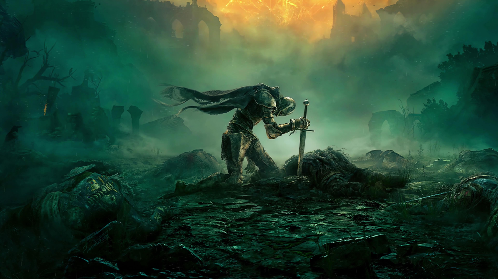

Elden Ring is an open-world action role-playing game developed by FromSoftware and published by Bandai Namco Entertainment. It is known for its challenging combat, deep lore, and vast interconnected world.
The game is directed by Hidetaka Miyazaki, with world-building contributions from fantasy author George R. R. Martin. Players explore the Lands Between, fighting powerful enemies and uncovering the secrets of the shattered Elden Ring.
Official Website: https://en.bandainamcoent.eu/elden-ring/elden-ring